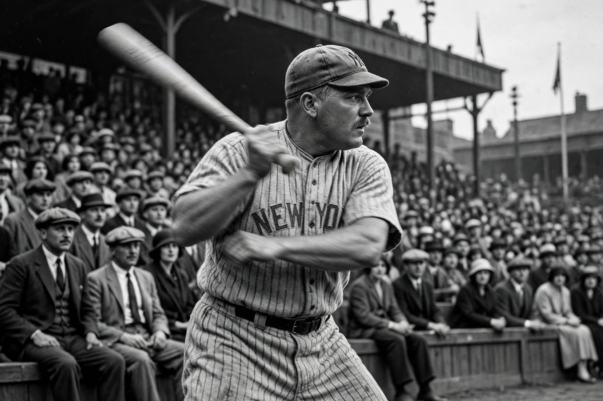

From Wikipedia, the free encyclopedia
| Babe Ruth | |
|---|---|
 Black-and-white photograph of Babe Ruth in a New York Yankees uniform following through on a swing | |
| Born | 6 February 1895, Baltimore, Maryland, US |
| Died | 16 August 1948 (aged 53), New York City, US |
| Positions | Outfielder / pitcher |
| Teams | Boston Red Sox (1914–1919); New York Yankees (1920–1934); Boston Braves (1935) |
| Career home runs | 714 |
George Herman "Babe" Ruth (1895–1948) was an American baseball player widely regarded as the greatest in the sport's history and one of the defining American celebrities of the 20th century. Nicknamed "the Bambino" and "the Sultan of Swat", he began his career as a star pitcher for the Boston Red Sox, helping them win three World Series titles, before his sale to the New York Yankees in 1920 — a transaction Boston fans blamed for the "Curse of the Bambino", an 86-year championship drought. As a slugging outfielder in New York, Ruth transformed baseball from a low-scoring game of strategy into a spectacle of power hitting.
Ruth hit 54 home runs in 1920, more than any other entire team, and 59 in 1921. In 1927, as the anchor of the Yankees' "Murderers' Row" lineup, he hit 60 home runs — a single-season record that stood for 34 years — as the 1927 Yankees won the World Series and entered legend as perhaps the greatest team ever. He won seven World Series titles in total (three with Boston, four with New York) and retired in 1935 with 714 career home runs, a record that stood until Hank Aaron passed it in 1974. His larger-than-life appetites and charisma made him a national icon of the Roaring Twenties.
Ruth was among the first five players inducted into the Baseball Hall of Fame in 1936. Yankee Stadium, opened in 1923, was called "The House That Ruth Built". His records, persona and name recognition — enduring long after his death from cancer in 1948 — set the template for the modern sports superstar, and he is routinely ranked alongside Shohei Ohtani's era of stars as the benchmark against whom baseball greatness is measured.
Categories: Babe Ruth | New York Yankees players | National Baseball Hall of Fame inductees